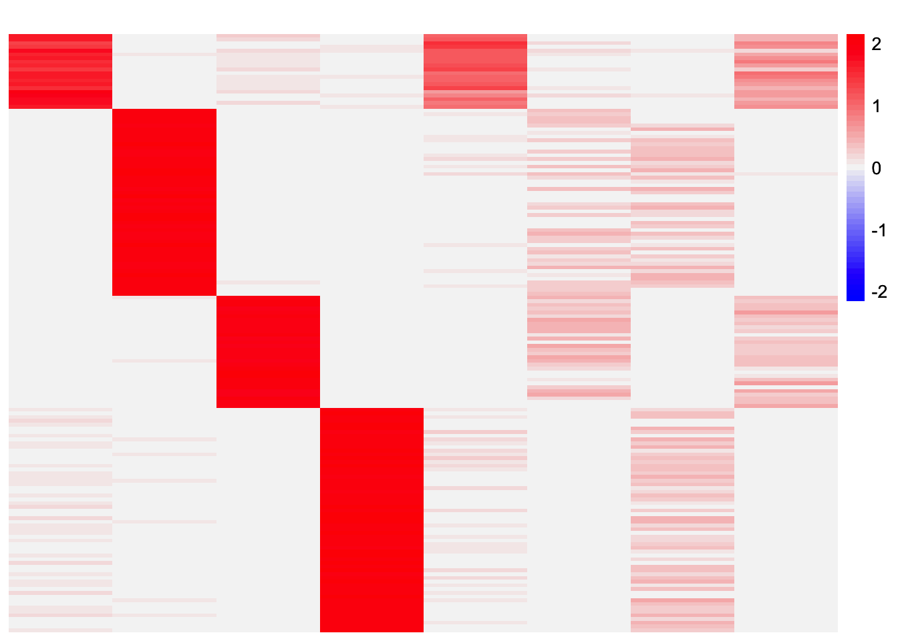

crossprod_sim_match_example
Annie Xie
2025-09-15
Last updated: 2025-09-15
Checks: 7 0
Knit directory: stability_selection/
This reproducible R Markdown analysis was created with workflowr (version 1.7.1). The Checks tab describes the reproducibility checks that were applied when the results were created. The Past versions tab lists the development history.
Great! Since the R Markdown file has been committed to the Git repository, you know the exact version of the code that produced these results.
Great job! The global environment was empty. Objects defined in the global environment can affect the analysis in your R Markdown file in unknown ways. For reproduciblity it’s best to always run the code in an empty environment.
The command set.seed(20250906) was run prior to running
the code in the R Markdown file. Setting a seed ensures that any results
that rely on randomness, e.g. subsampling or permutations, are
reproducible.
Great job! Recording the operating system, R version, and package versions is critical for reproducibility.
Nice! There were no cached chunks for this analysis, so you can be confident that you successfully produced the results during this run.
Great job! Using relative paths to the files within your workflowr project makes it easier to run your code on other machines.
Great! You are using Git for version control. Tracking code development and connecting the code version to the results is critical for reproducibility.
The results in this page were generated with repository version 3b6dd7b. See the Past versions tab to see a history of the changes made to the R Markdown and HTML files.
Note that you need to be careful to ensure that all relevant files for
the analysis have been committed to Git prior to generating the results
(you can use wflow_publish or
wflow_git_commit). workflowr only checks the R Markdown
file, but you know if there are other scripts or data files that it
depends on. Below is the status of the Git repository when the results
were generated:
Ignored files:
Ignored: .DS_Store
Ignored: .Rhistory
Ignored: .Rproj.user/
Note that any generated files, e.g. HTML, png, CSS, etc., are not included in this status report because it is ok for generated content to have uncommitted changes.
These are the previous versions of the repository in which changes were
made to the R Markdown
(analysis/crossprod_sim_match_example.Rmd) and HTML
(docs/crossprod_sim_match_example.html) files. If you’ve
configured a remote Git repository (see ?wflow_git_remote),
click on the hyperlinks in the table below to view the files as they
were in that past version.
| File | Version | Author | Date | Message |
|---|---|---|---|---|
| Rmd | 3b6dd7b | Annie Xie | 2025-09-15 | Add example of crossprod-sim-based match variant |
Introduction
In this analysis, I provide an example where pairing the factors using the crossproduct similarity objective does not lead to the most similar factors being paired.
library(dplyr)
library(ggplot2)
library(pheatmap)source('code/visualization_functions.R')Code
This is the version of stability selection that pairs the factors of the two estimates, creating a one-to-one mapping.
stability_selection_split_data <- function(X, dim = c('rows', 'columns')){
if (dim == 'rows'){
n <- nrow(X)
n1 <- ceiling(n/2)
# n2 <- floor(nrow(X)/2)
} else if (dim == 'columns'){
n <- ncol(X)
n1 <- ceiling(n/2)
# n2 <- floor(ncol(X)/2)
} else {
stop('Wrong input for dim')
}
subset1 <- sample(n, size = n1, replace = FALSE)
X1 <- X[,subset1]
X2 <- X[,-(subset1)]
return(list(X1, X2))
}
stability_selection_post_processing <- function(L1, L2, threshold=0.99){
K1 <- ncol(L1)
K2 <- ncol(L2)
n <- nrow(L1)
#if estimates don't have same number of columns, try padding the estimate with zeros and make cosine similarity zero
if (K1 < K2){
L1 <- cbind(L1, matrix(0, ncol = (K2-K1), nrow = n))
}
if (K1 > K2){
L2 <- cbind(L2, matrix(0, ncol = (K1-K2), nrow = n))
}
# use cosine similarity as similarity metric
# could try correlation but may run into issues if there is a constant baseline
norms1 <- apply(L1, 2, function(x){sqrt(sum(x^2))})
norms1[norms1 == 0] <- Inf
norms2 <- apply(L2, 2, function(x){sqrt(sum(x^2))})
norms2[norms2 == 0] <- Inf
L1_normalized <- t(t(L1)/norms1)
L2_normalized <- t(t(L2)/norms2)
#compute matrix of cosine similarities
cosine_sim_matrix <- abs(crossprod(L1_normalized, L2_normalized))
assignment_problem <- lpSolve::lp.assign(cosine_sim_matrix, direction = "max")
perm <- apply(assignment_problem$solution, 1, which.max)
max_similarity <- diag(cosine_sim_matrix[,perm])
factors.idx.keep <- max_similarity > threshold
L_final <- L1[, factors.idx.keep]
return(list(L = L_final, similarity = cosine_sim_matrix, perm = perm))
}CoDesymNMF in unbalanced nonoverlapping setting
I present an example of CoDesymNMF in the unbalanced nonoverlapping setting.
Data Generation
sim_star_data <- function(args) {
set.seed(args$seed)
n <- sum(args$pop_sizes)
p <- args$n_genes
K <- length(args$pop_sizes)
FF <- matrix(rnorm(K * p, sd = rep(args$branch_sds, each = p)), ncol = K)
LL <- matrix(0, nrow = n, ncol = K)
for (k in 1:K) {
vec <- rep(0, K)
vec[k] <- 1
LL[, k] <- rep(vec, times = args$pop_sizes)
}
E <- matrix(rnorm(n * p, sd = args$indiv_sd), nrow = n)
Y <- LL %*% t(FF) + E
YYt <- (1/p)*tcrossprod(Y)
return(list(Y = Y, YYt = YYt, LL = LL, FF = FF, K = ncol(LL)))
}pop_sizes <- c(20,50,30,60)
n_genes <- 1000
branch_sds <- rep(2,4)
indiv_sd <- 1
seed <- 1
sim_args = list(pop_sizes = pop_sizes, branch_sds = branch_sds, indiv_sd = indiv_sd, n_genes = n_genes, seed = seed)
sim_data <- sim_star_data(sim_args)This is a heatmap of the true loadings matrix:
plot_heatmap(sim_data$LL)Stability Selection via Splitting Columns
First, I try splitting the data by splitting the columns.
set.seed(1)
X_split_by_col <- stability_selection_split_data(sim_data$Y, dim = 'columns')codesymnmf_fits_by_col <- list()
for (i in 1:length(X_split_by_col)){
cov_mat <- tcrossprod(X_split_by_col[[i]])/ncol(X_split_by_col[[i]])
codesymnmf_fits_by_col[[i]] <- codesymnmf::codesymnmf(cov_mat, 8)$H
}This is a heatmap of the estimated loadings from the first subset:
plot_heatmap(codesymnmf_fits_by_col[[1]], colors_range = c('blue','gray96','red'), brks = seq(-max(abs(codesymnmf_fits_by_col[[1]])), max(abs(codesymnmf_fits_by_col[[1]])), length.out = 50))
This is a heatmap of the estimated loadings from the second subset:
plot_heatmap(codesymnmf_fits_by_col[[2]], colors_range = c('blue','gray96','red'), brks = seq(-max(abs(codesymnmf_fits_by_col[[2]])), max(abs(codesymnmf_fits_by_col[[2]])), length.out = 50))
results_by_col <- stability_selection_post_processing(codesymnmf_fits_by_col[[1]], codesymnmf_fits_by_col[[2]], threshold = 0.99)
L_est_by_col <- results_by_col$LThis is the cosine similarity matrix between the two esimates:
results_by_col$similarity [,1] [,2] [,3] [,4] [,5] [,6]
[1,] 0.992441633 0.0007882896 0.005225026 0.05836033 0.04308110 0.52319965
[2,] 0.006180651 0.9991800025 0.010445230 0.01242945 0.61540932 0.05595478
[3,] 0.050939444 0.0114310082 0.996476188 0.02806150 0.05990190 0.37584649
[4,] 0.013035115 0.0098892530 0.037016691 0.99901429 0.57949286 0.28472962
[5,] 0.973867546 0.0318330694 0.005989605 0.08386616 0.06036410 0.51693141
[6,] 0.081954318 0.5044628413 0.614179035 0.02014473 0.32517825 0.28116685
[7,] 0.018568327 0.5048024953 0.027506829 0.67274096 0.68068663 0.16993326
[8,] 0.807978418 0.0066744285 0.479736897 0.01364228 0.03670183 0.58486958
[,7] [,8]
[1,] 0.003121928 0.51571984
[2,] 0.318851804 0.55670118
[3,] 0.880424173 0.03590331
[4,] 0.005670237 0.03269379
[5,] 0.011161651 0.48162355
[6,] 0.691192136 0.31477245
[7,] 0.177010505 0.35792090
[8,] 0.432242139 0.42757127From this, we would expect all four components to be recovered because their maximum similarities all exceed 0.99.
This is a heatmap of the final loadings estimate:
plot_heatmap(L_est_by_col, colors_range = c('blue','gray96','red'), brks = seq(-max(abs(L_est_by_col)), max(abs(L_est_by_col)), length.out = 50))
We see that in the final loadings estimate, we only recover three of the four components. It is surprisng that we did not recover the first group. Looking at the similarities for the paired factors, we see that the first factors from both estimates were not paired.
This is the pairing where the index refers to the index of the factor in the first estimate and the entry refers to the index of the factor in the second estimate.
results_by_col$perm[1] 8 2 3 4 1 7 5 6These are the similarities of the pairs.
diag(results_by_col$similarity[,results_by_col$perm])[1] 0.5157198 0.9991800 0.9964762 0.9990143 0.9738675 0.6911921 0.6806866
[8] 0.5848696Factor 5 in the first estimate is also highly similar to factor 1 in the second estimate (but not as highly similar as factor 1 from the first estimate). However, the values of the similarities with the other factors meant that a higher objective function could be attained by pairing factor 5 from the first estimate with factor 1 from the second estimate and pairing factor 1 from the first estimate to another factor. Intuitively, I think we would expect factors that are highly similar (e.g. similarity exceeding 0.99) to always be matched.
sessionInfo()R version 4.3.2 (2023-10-31)
Platform: aarch64-apple-darwin20 (64-bit)
Running under: macOS 15.6
Matrix products: default
BLAS: /Library/Frameworks/R.framework/Versions/4.3-arm64/Resources/lib/libRblas.0.dylib
LAPACK: /Library/Frameworks/R.framework/Versions/4.3-arm64/Resources/lib/libRlapack.dylib; LAPACK version 3.11.0
locale:
[1] en_US.UTF-8/en_US.UTF-8/en_US.UTF-8/C/en_US.UTF-8/en_US.UTF-8
time zone: America/Chicago
tzcode source: internal
attached base packages:
[1] stats graphics grDevices utils datasets methods base
other attached packages:
[1] pheatmap_1.0.12 ggplot2_3.5.2 dplyr_1.1.4 workflowr_1.7.1
loaded via a namespace (and not attached):
[1] gtable_0.3.6 jsonlite_2.0.0 compiler_4.3.2
[4] promises_1.3.3 tidyselect_1.2.1 Rcpp_1.0.14
[7] stringr_1.5.1 git2r_0.33.0 callr_3.7.6
[10] later_1.4.2 jquerylib_0.1.4 scales_1.4.0
[13] yaml_2.3.10 fastmap_1.2.0 R6_2.6.1
[16] generics_0.1.4 knitr_1.50 tibble_3.3.0
[19] rprojroot_2.0.4 RColorBrewer_1.1-3 bslib_0.9.0
[22] pillar_1.10.2 rlang_1.1.6 cachem_1.1.0
[25] stringi_1.8.7 httpuv_1.6.15 xfun_0.52
[28] getPass_0.2-4 fs_1.6.6 sass_0.4.10
[31] cli_3.6.5 withr_3.0.2 magrittr_2.0.3
[34] ps_1.7.7 grid_4.3.2 digest_0.6.37
[37] processx_3.8.4 rstudioapi_0.16.0 lifecycle_1.0.4
[40] vctrs_0.6.5 lpSolve_5.6.20 evaluate_1.0.4
[43] glue_1.8.0 farver_2.1.2 whisker_0.4.1
[46] codesymnmf_0.0.0.9000 rmarkdown_2.29 httr_1.4.7
[49] tools_4.3.2 pkgconfig_2.0.3 htmltools_0.5.8.1